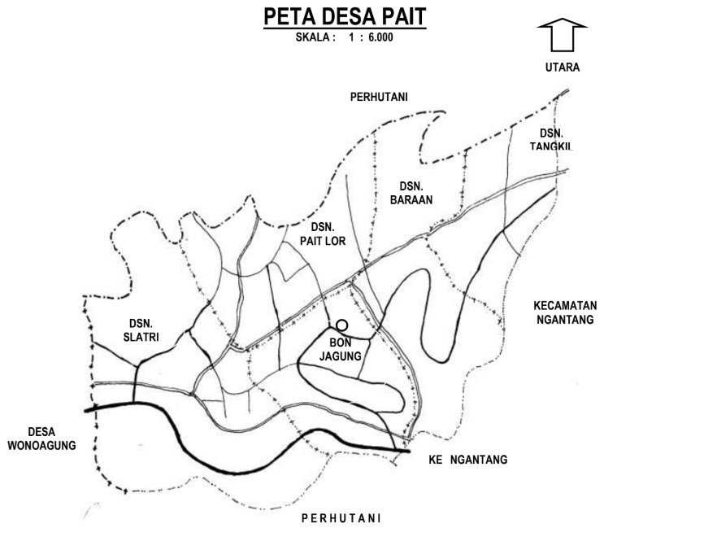

Desa Pait merupakan salah satu Desa dari 6 Desa yang berada di Kecamatan Kasembon, Kabupaten Malang, berjarak + 8 KM dari Pusat Pemerintahan Kecamatan Kasembon dan berjarak + 98 KM dari Pusat Pemerintahan Kabupaten Malang di Kepanjen. Secara geografis terletak di antara 7° 48' 08" LS dan 112° 21' 56" BT, dengan ketinggian rata-rata 574 Meter dari permukaan laut, dengan rata-rata curah hujan 1.328 – 1.448 mm/tahun.